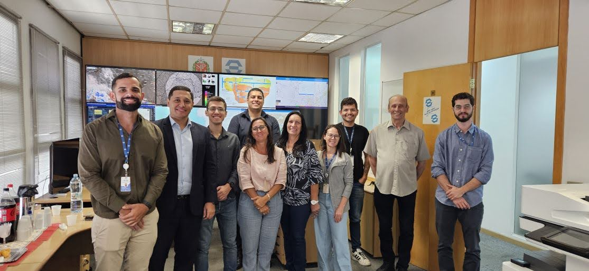
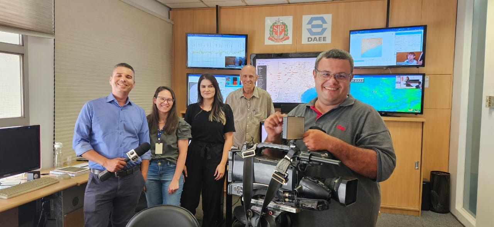
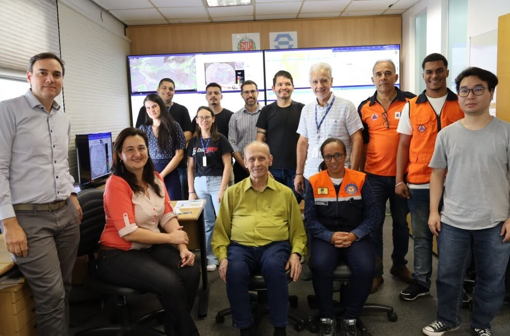

A Sala de situação do Estado de São Paulo é responsável pelo monitoramento dos recursos hídricos. Esse monitoramento é realizado através de dados de satélites, radares, pluviômetros que são utilizados para análise de chuva e os fluviômetros utilizados para análise de rios, córregos e outros corpos d'água. Atualmente a sala de situação conta com aproximadamente 2.000 pontos de monitoramento no Estado. Com esses dados e informações são gerados alertas de eventos críticos, boletins e relatórios técnicos que são disponibilizados no e-mail, whatsApp, email e site. Operando como uma central de monitoramento em tempo real, a sala de situação tem objetivo de acompanhar condições hidrometeorologicas e ocorrências de eventos críticos, além, de subsidiar a gestão de recursos hídricos em todo o Estado.


Entrevista feita na sala de situação em 2023, sobre o monitoramento de eventos críticos, para matéria sobre o dia da meteorologia.

Representantes do Consórcio Intermunicipal Grande ABC, da FCTH-Poli-USP e das Defesas Civis de Mauá e Rio Grande da Serra estiveram no DAEE, no dia 03 de Maio, para uma visita técnica a Sala de Situação do estado de São paulo.
Durante o encontro, foi apresentada a rotina de monitoramento, os sistemas desenvolvidos para visualização de dados de chuva, nivél e vazão dos rios. A visita visa fortalecer a cooperação técnica na área do monitoramento.
As mudanças climáticas nos tempos atuais, vem cada vez mais entrando em destaques nas notícias e na vida cotidiana.
Falar de clima e monitormento em Recursos Hídricos é um fator muito importante a ser lembrado e divulgado para que possamos ajudar de alguma maneira em uma maior compreensão sobre o clima e suas variações.